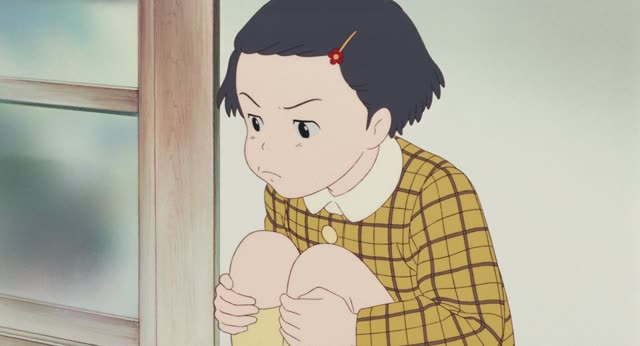

う-Verb (Negative)
| Polite | ～ません u sound → i, add ません |
|---|---|
| Casual | ～ない u sound → a, add ない |
Same meaning: "don't, doesn't". Only the politeness changes.
Quartet · Episode 2
私も絶対に言いません。
"I won't tell anyone either, ever."
To say a う-verb is not happening, politely: move the last sound from u to i, then add ません. 言う (to say) → 言いません. Same i sound as before ます.
On this card, she promises to keep a secret. The sentence answers "Will you tell?": never. 絶対に = "absolutely".
Casual: move the last sound from u to a, then add ない: 言わない. Verbs ending in う take わ, not あ.

Shirokuma Cafe · Season 1, Episode 4
いや、寝てても構わないけど
"Nah, I don't mind if you sleep, though."
Same move, casual: 構う (to mind) → 構わない. It ends in う, so it goes to わ, not あ.
Quick Examples
A friend asks where Tanaka went.
知らない。
"No idea."
知る → 知らない. る moves to ら, then ない.
CasualA coworker asks if you're coming for drinks after work.
今日は飲みません。
"I'm not drinking today."
飲む → 飲みません. む moves to み, same as 飲みます.
PoliteYou're in a shop with a friend. They hold up a jacket that costs way too much.
高いから買わない。
"It's too expensive, so I'm not buying it."
One catch: verbs ending in う go to わ, not あ. 買う → 買わない.
CasualYou and a coworker look out the window. It's been raining all day.
雨がなかなか止みません。
"The rain just won't stop."
ません works for "don't" and "won't". There's no separate future.
PoliteWith and without
コーヒーを飲む。
"I drink coffee."
コーヒーを飲まない。
"I don't drink coffee." む → ま, then ない.
コーヒーを飲みません。
Same meaning. む → み, then ません.
コーヒーを飲むない。
ない never goes straight on the dictionary form. The last sound has to change first.
Examples from Media

YouTube · video
でも多分それではうまくいかないんですね
"But that probably won't work, huh."
いく → いかない. うまくいかない = "doesn't go well". The んですね after it makes the whole thing polite.
Kekkon Dekinai Otoko · Episode 12
知りません。
"I don't know."
知る → 知ります → 知りません.

Shirokuma Cafe · Episode 20
う～ん… ベロが届かないよ！
"Ugh... my tongue can't reach!"
届く → 届かない: the く sound becomes か, then ない.
1 Litre of Tears · Episode 11
文句言わない。
"No complaining."
言う → 言わない: う becomes わ.
Dungeon Meshi · Episode 17
分からない。
"I don't know."
分かる → 分からない.

Only Yesterday
行かない！
"I'm not going!"
行く → 行かない.
Teasing Master Takagi-san · Season 2, Episode 11
一緒に行かない？
"Want to go together?"
A negative question is an invitation.
Vinland Saga · Episode 19
俺には まだ分からない。
"I still don't understand."
Further Reading
A Dictionary of Basic Japanese Grammar
Appendix 1, Basic Conjugations (Group 1 verbs) · pp. 576–577
Tae Kim's Guide to Japanese Grammar
Negative Verbs · Conjugating verbs into the negative
Polite Form and Verb Stems · Using 「～ます」 to make verbs polite